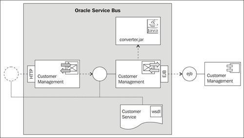
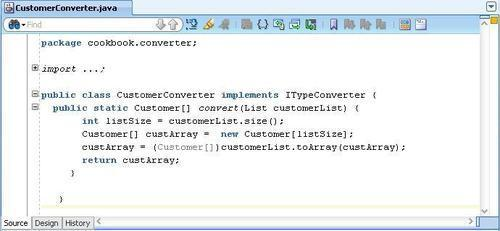
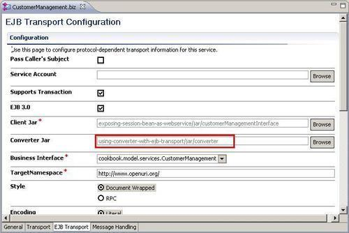
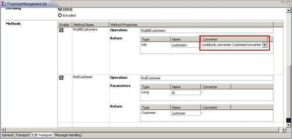
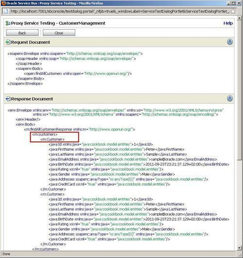

Usually, data conversion between an EJB and OSB is done for you in OSB. However, when dealing with EJBs, there are times when automatic conversion is simply not possible. For example, if the EJB returns any of the following, the JAX RPC engine will not be able to infer the true type being returned:
java.lang.Objectjava.lang.Object[]In such cases, we can help the JAX RPC engine, by providing converter classes that convert from these types to the supported types.
In this recipe, we will change the mapping of the findAllCustomers method by using a converter class from the EJB transport on the business service, so that the method returns a typed result.

We have already created a converter class that converts the list of customers to a customer array. The following screenshot shows the implementation of the converter, which is available in the converter.jar archive file in the ejb-jdev-workspace\ejb\deploy folder:

The important things to know when implementing a converter class are:
com.bea.wli.sb.transports.ejb.ITypeConverter interface, available in the sb-kernel-api.jar file that is found in the osb_10.3\lib directory of the OSB installation. convert. The return value of this method may be any type at all, but the arguments to the method must be an Object, Object[], Collection, List, Map, etc. Otherwise the OSB will not show the class as an available converter.Make sure that the EJB session bean is deployed to the OSB server as shown in the Introduction section of this chapter.
Import the OSB project containing the solution from the recipe, Exposing an EJB session bean as a service on the OSB using the EJB transport, into Eclipse from \chapter-4\getting-ready\using-converter-with-ejb-transport.
In Eclipse OEPE, perform the following steps:
converter.jar from the ejb-jdev-workspace\ejb\deploy folder into the jar folder of the project. converter.jar file inside the jar folder:

Now, retest the proxy service from the Service Bus console. Invoke the findAllCustomers operation from the Test console and the following result should be shown:

If you compare that to the result we have seen in the previous recipe, we can see that there is no longer a soap array being returned.
By implementing a converter class and registering it on the EJB transport configuration of the business service, we were able to change the mapping of the list of customers being returned by the findAllCustomers method. Instead of the untyped soap array, which can cause a lot of interoperability issues, we now return a collection of customer objects, that more closely matches the signature of the EJB session bean method.
The converter class translated the list of customers to a customer array, which the JAX RPC engine understands.